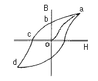
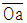
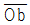
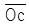
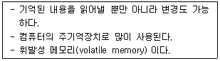
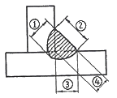

자기비파괴검사산업기사(구) (2008-07-27 기출문제)
1과목: 자기탐상시험원리
1. 시험체의 두께 2인치, 너비 4인치, 길이 13인치인 쇠막대인 경우 필요한 원형자화 전류(A)의 범위는?
- 130~260
- 600~800
- 1200~1600
- 2400~3200
(정답률: 알수없음)

2. 강자성체를 자화시키는 경우 자력선은 자기저항이 적은 재료의 내부로 흐르게 되나, 자력선을 차단하는 불연속이 존재하는 경우 시험체 외부로 새어나오게 되는데 이를 무엇이라 하는가?
- 누설자속
- 결함자속
- 자속밀도
- 자계강도
(정답률: 알수없음)
3. 자분탐상검사에서 가장 적절한 시험방법과 정확한 결과를 얻기 위해서 우선적으로 고려해야 할 내용과 가장 거리가 먼 것은?
- 탈자 여부
- 전류의 종류
- 시험체의 재질, 형상
- 자분의 종류 및 적용법
(정답률: 알수없음)
4. 자기이력(Hysteresis) 곡선의 각 부분에 대한 내용 중 틀린 것은?


: 초기자화곡선
: 잔류자기
: 항자력- X축 : 자속밀도
(정답률: 알수없음)
5. 자분탐상검사법 중 전류관통법을 적용할 때 시험체에 작용하는 자계에 대한 설명으로 틀린 것은?
- 자계의 강도는 전류의 크기에 비례한다.
- 자계강도는 도체 중심에서의 거리에 비례한다.
- 자계의 형상은 도체의 주변에서 거의 원형으로 된다.
- 자화전류치는 주어진 자계의 적정치로부터 계산할 수 있다.
(정답률: 알수없음)
6. 외경이 20인치인 환봉을 직류를 사용하여 통전법으로 원형자화시킬 때 필요한 전류로 적합한 것은?
- 500A
- 900A
- 1400A
- 2500A
(정답률: 알수없음)
7. 다음 중 알루미늄 재료에 적용할 수 없는 비파괴검사법은?
- 침투탐상시험
- 자분탐상시험
- 초음파탐상시험
- 와전류탐상시험
(정답률: 알수없음)
8. 열처리의 영향에 따른 전기전도도의 변화를 측정할 수 있는 비파괴검사법은?
- 자분탐상시험
- 음향방출시험
- 와전류탐상시험
- 초음파탐상시험
(정답률: 알수없음)
9. 미시 방사선투과시험(micro radiography)에 사용되는 에너지의 범위로 옳은 것은?
- 5~50kV
- 60~150kV
- 180~250kV
- 350~500kV
(정답률: 알수없음)
10. 비파괴검사의 안전관리에 대한 설명 중 옳은 것은?
- 방사선투과시험에 취급되는 저방사선의 경우 안전관리에 특별히 유의할 필요는 없다.
- 초음파탐상시험에 취급되는 초음파가 강력한 경우 유자격자에 의한 관리·지도를 반드시 의무화 하여야 한다.
- 형광침투액을 이용하는 탐상시험에 사용되는 자외선 조사등은 눈에 영향을 주지 않으므로 그에 대한 대책은 불필요하다.
- 유기용제에 사용하는 침투탐상시험에는 방화대책이나 환기 등의 안전관리에 특히 주의할 필요가 있다.
(정답률: 알수없음)
11. 초음파탐상시험에서 공진법으로 시험체의 두께를 측정할 때 2MHz 의 주파수에서 기본공명이 발생했다면 이 시험체의 두께는 몇 mm 인가?
- 1.2
- 2.4
- 3.6
- 4.8
(정답률: 알수없음)
12. 다음 중 침투탐상시험법의 장점이 아닌 것은?
- 거의 모든 재질과 제품에 적용이 가능하다.
- 검사 방법이 간편하고 결과를 즉시 알 수 있다.
- 시험체는 침투제와 반응하여 보호막을 형성한다.
- 시험체의 크기, 형상에 크게 영향을 받지 않는다.
(정답률: 알수없음)
13. 비파괴검사법 중 시험체의 내부와 외부의 압력차를 이용, 기체나 액체가 결함부를 통해 흘러 들어가거나 나오는 것을 감지하는 방법으로 압력용기나 배관 등에 적용하기 적합한 시험법은?
- 누설검사
- 침투탐상시험
- 자분탐상시험
- 초음파탐상시험
(정답률: 알수없음)
14. 쿨롱의 법칙에서 두 자극 사이에 작용하는 힘(F)을 구하는 식으로 옳은 것은? (단, 자극의 세기는 각각 m, m', 투자율은 μ, 자극 간의 간격은 r 이다.)(문제 오류로 문제 및 보기 내용이 정확하지 않습니다. 정확한 내용을 아시는 분께서는 오류신고를 통하여 내용 작성 부탁드립니다. 정답은 3번입니다.)
- 복원중
- 복원중
- 복원중
- 복원중
(정답률: 알수없음)
15. 철강 재료의 와전류탐상시험에 의한 재질 시험에서 지시에 가장 큰 영향을 주는 인자는 다음 중 무엇인가?
- 투자율
- 열전도도
- 인장강도
- 전기전도도
(정답률: 알수없음)
16. 비파괴검사의 목적으로 볼 수 없는 것은?
- 검사 종류별 최신 장비만을 사용하여야 한다.
- 재료의 낭비를 줄이므로 생산성을 증가시킨다.
- 사고를 예방하여 인명과 재산 손실을 방지한다.
- 품질수준을 높이고 균질성을 개선, 고객에게 만족한 제품을 생산한다.
(정답률: 알수없음)
17. 다음의 비파괴검사법 중 인체의 유해성이 가장 큰 시험법은?
- 자분탐상시험
- 초음파탐상시험
- 방사선투과시험
- 와전류탐상시험
(정답률: 알수없음)
18. 누설검사법 중 가압법을 적용한 압력변화시험의 장점을 설명한 것으로 틀린 것은?
- 누설의 양을 측정할 수 있다.
- 누설의 위치 확인이 매우 쉽다.
- 시험체의 크기에 관계없이 검사가 가능하다.
- 측정 게이지로 누설 여부를 즉시 알 수 있다.
(정답률: 알수없음)
19. 수세성 형광침투탐상시험의 특성에 대한 설명으로 틀린 것은?
- 수도시설, 암실, 전원 및 자외선 조사장치가 필요하다.
- 나사부 형상과 같은 복잡한 시험체는 탐상할 수 없다.
- 소형 및 다량의 제품을 1회의 작업으로 탐상할 수 있다.
- 과세척의 우려가 있어 폭이 넓고 얕은 결함의 탐상이 곤란하다.
(정답률: 알수없음)
20. 비파괴평가 기법을 능동적 기법과 수동적 기법으로 나눌 때 다음 중 능동적 기법에 해당하는 것은?
- 누설검사법
- 잡음 해석법
- 음향방출시험법
- 초음파탐상시험법
(정답률: 알수없음)
2과목: 자기탐상검사
21. 다음 중 자분탐상검사의 습식자분에 관한 설명으로 틀린 것은?
- 건식자분에 비해 유동성이 떨어진다.
- 일반적으로 자분은 구형과 길쭉한 형태를 혼합하여 사용한다.
- 일반적으로 건식자분보다 습식자분에는 입도가 더 큰 것을 사용한다.
- 서로 엉겨붙는 현상이 발생할 수 있어서 시험면이 거친 경우에는 부적합하다.
(정답률: 알수없음)
22. 축통전법으로 자분탐상검사하는 경우 직경 40mm 의 강봉 표면에 10[Oe]를 얻기 위한 자화 전류는 약 몇 A 인가?
- 10A
- 40A
- 80A
- 400A
(정답률: 알수없음)
23. 직경 40mm, 길이 200mm 인 봉을 코일법으로 검사할 때 장비 최대전류가 1000A 라면 검사체에는 몇 회의 코일을 감아야 하는가?
- 2회
- 5회
- 10회
- 15회
(정답률: 알수없음)
24. 자분탐상검사에 사용되는 자분의 성능 점검에 대한 설명으로 옳은 것은?
- 형광자분의 질량, 체적이 점검대상이다.
- 입도, 유동성, 착색제의 변색은 점검대상이다.
- 형광자분은 흡착성, 자성을 점검하지 않아도 된다.
- 보관 중 또는 사용 중 습기의 영향은 고려하지 않아도 된다.
(정답률: 알수없음)
25. 자분탐상검사에서 물에 분산시켜 검사액을 만드는 경우 일반적으로 첨가하는 물질이 아닌 것은?
- 녹방지제
- 오염방지제
- 계면활성제
- 거품방지제
(정답률: 알수없음)
26. 균열은 기기, 구조물의 종류에 따라 여러 가지가 있지만 기기, 구조물 전체를 취급하여 논하는 경우 피로균열이 많은 결함을 차지한다. 이 피로균열에 관한 설명으로 다음 중 옳은 것은?
- 부식분위기 중에는 발생하지 않는다.
- 언더컷 저부에 발생한 균열은 검출하기가 매우 어렵다.
- 피로균열의 발생을 방지하기 위해서는 먼저 부분 용입 용접을 한다.
- 모든 균열과 마찬가지로 피로균열도 항상 응력방향과 수평방향으로 진행한다.
(정답률: 알수없음)
27. 다음 중 자분이 가져야 할 성질로서 틀린 것은?
- 비독성이어야 한다.
- 낮은 투자율을 가져야 한다.
- 낮은 보자성을 가져야 한다.
- 검사체와의 색대비가 좋아야 한다.
(정답률: 알수없음)
28. 자분탐상검사 방법 중 잔류법과 비교할 때 연속법의 특징으로 옳은 것은?
- 내부결함의 검출은 거의 불가능하다.
- 보자력이 낮고 잔류자기가 적은 재료에 적용한다.
- 소형의 시험체가 다수 있을 때 탐상 능률을 높일 수 있다.
- 나사부 등 복잡한 형상부에 적용하면 좋은 결과를 얻을 수 있다.
(정답률: 알수없음)
29. 다음의 조합 중 자분탐상검사에서 보자력이 낮은 시험체의 표면 미세 결함을 탐상하기에 가장 좋은 방법은?
- 건식, 연속법
- 건식, 잔류법
- 습식, 연속법
- 습식, 잔류법
(정답률: 알수없음)
30. 자분탐상검사에서 자화전류의 선정에 대한 설명으로 틀린 것은?
- 직류는 연속법 및 잔류법에 사용한다.
- 반파정류 전류는 표면결함 검출에만 사용한다.
- 교류는 연속법에 적용하는 것을 원칙으로 한다.
- 맥류는 표면 및 표면직하 결함 검출에 사용한다.
(정답률: 알수없음)
31. 다음 중 최종 용접부의 표면에서만 발생될 수 있는 불연속으로 용접 보수할 결함에 해당하는 것은?
- 기공(Porosity)
- 언더컷(Undercut)
- 융합부족(Lack of Fusion)
- 슬래그 개재물(Slag Inclusion)
(정답률: 알수없음)
32. 미세한 점 형태로 부식이 진행하는 것으로서 해수에 의한 스테인리스강의 부식 등에서 발견되는 결함은?
- 공식(pitting)
- 슬래그(slag)
- 기공(porosity)
- 롤마크(roll mark)
(정답률: 알수없음)
33. 다음 중 시험체에 직접 전류를 흘리는 자분탐상검사법으로만 나열된 것은?
- 극간법, 프로드법
- 코일법, 프로드법
- 축통전법, 직각통전법
- 전류관통법, 자속관통법
(정답률: 알수없음)
34. 습식자분과 비교하여 건식자분의 특징으로 틀린 것은?
- 표면 결함에 대한 감도가 높다.
- 거친 면의 검사에 성능이 우수하다.
- 고온부의 시험에서 성능이 우수하다.
- 불규칙한 모양이나 대형물에 적당하다.
(정답률: 알수없음)
35. 자분탐상검사 후 탈자를 수행할 때 탈자전류의 방향이 바뀌는 것은 주기가 매우 중요한데 그 이유로 가장 적합한 것은?
- 주기가 느리면 탈자가 부분적으로 복원되기 때문이다.
- 주기가 빠르면 탈자가 표면에만 국한되기 때문이다.
- 주기가 빠르면 유도효과에 의한 잔류자계가 증대되기 때문이다.
- 주기가 느리면 자기이력곡선의 폐회로가 완전하게 이루어지지 않기 때문이다.
(정답률: 알수없음)
36. 용접부나 주조품 등 거친 표면에 자분을 적용할 때 결함검출능력에 영향을 주는 요소와 가장 거리가 먼 것은?
- 자분의 비중
- 자분 산포 방법
- 자분의 건조상태
- 시험부 표면의 건조 상태
(정답률: 알수없음)
37. 자화전원부의 형식 중 잔류법으로만 사용되며 통전시간이 가장 짧은 것은?
- 전자석식
- 강압 변압기식
- 축전지 방전식
- 사이리스터제어 원-펄스 통전식
(정답률: 알수없음)
38. 최종 용접 표면의 검사에 가장 많이 사용되는 자분탐상 검사법은?
- 극간법
- 코일법
- 프로드법
- 축통전법
(정답률: 알수없음)
39. 강자성체의 자분탐상검사법에서 자화방법을 선정할 때 고려해야 할 사항과 가장 거리가 먼 것은?
- 결함의 방향성
- 시험체의 형태
- 시험체의 표면상태
- 시험체의 전기전도도
(정답률: 알수없음)
40. 다음 중 자외선등에 사용되는 자외선의 파장으로 옳은 것은?
- 365nm
- 560nm
- 800nm
- 1200nm
(정답률: 알수없음)
3과목: 자기탐상관련규격및컴퓨터활용
41. 철강 재료의 자분탐상 시험방법 및 자분모양의 분류(KS D 0213)에서 “시험 기록” 중에 시험 조건으로 반드시 작성하지 않아도 되는 것은?
- 시험 장치
- 자분의 모양
- 시험실 온도
- 자분의 적용시기
(정답률: 알수없음)
42. 철강 재료의 자분탐상 시험방법 및 자분모양의 분류(KS D 0213)에서 규정하고 있는 의사모양이 아닌 것은?
- 전류지시
- 단면급변지시
- 오염지시
- 표면거칠기지시
(정답률: 알수없음)
43. 보일러 및 압력용기에 대한 표준자분탐상검사(ASME Sec.V, Art.25 SE-709)에 따라 형광자분을 사용하여 탐상을 수행할 때 나타난 자분모양의 정확한 판단을 하기 위하여 검사원은 어두운 시험장소에서 최소 몇분 이상의 적응시간을 규정하고 있는가?
- 1분
- 3분
- 10분
- 15분
(정답률: 알수없음)
44. 철강 재료의 자분탐상 시험방법 및 자분모양의 분류(KS D 0213)에 따라 시험체에 자분을 적용할 때 주의하여야 할 내용의 설명으로 틀린 것은?
- 연속법에 있어서는 자화 조작 중에 자분의 적용을 완료한다.
- 잔류법에 있어서는 자화 조작 전에 자분의 적용을 완료한다.
- 건식법에 있어서는 시험면이 충분히 건조되어 있는가 확인 후 자분을 적용한다.
- 습식법에 있어서는 시험면 위의 검사액이 유속(流速)이 빠르지 않도록 주의한다.
(정답률: 알수없음)
45. 보일러 및 압력용기에 대한 자분탐상검사(ASME Sec.V, Art.7)에서 형광자분탐상검사시 자외선등을 점화시켜 모든 기능을 발휘할 때까지 최소 얼마 동안 예열하도록 규정하는가?
- 2분
- 3분
- 4분
- 5분
(정답률: 알수없음)
46. 철강 재료의 자분탐상 시험방법 및 자분모양의 분류(KS D 0213)에서 자화전류를 통하거나 또는 영구자석을 접촉시켜 주면서 자분의 적용을 완료하는 시험방법을 무엇이라 하는가?
- 습식법
- 연속법
- 잔류법
- 건식법
(정답률: 알수없음)
47. 철강 재료의 자분탐상 시험방법 및 자분모양의 분류(KS D 0213)에 의한 자화시 고려하여야 할 사항으로 틀린 것은?
- 반자계를 적게 한다.
- 시험면을 아크 등에 의하여 태우는 것은 자화방법의 선택과는 무관하다.
- 자계의 방향을 시험면에 가급적 평행으로 되게 한다.
- 자계의 방향을 예측되는 흠의 방향에 대하여 가급적 직각이 되게 한다.
(정답률: 알수없음)
48. 철강 재료의 자분탐상 시험방법 및 자분모양의 분류(KS D 0213)의 B형 대비시험편에 대한 설명으로 옳은 것은?
- 잔류법으로 사용한다.
- 인공 흠의 치수는 깊이 8mm, 나비 20mm로 한다.
- 장치, 자분 및 검사액의 성능 조사에 사용한다.
- 시험편의 직경은 10, 50, 100, 150, 200mm 가 있다.
(정답률: 알수없음)
49. 보일러 및 압력용기에 대한 표준자분탐상검사(ASME Sec.V, Art.25 SE-709)에서 규정한 전류계의 정밀도에 대한 최대 교정주기로 옳은 것은?
- 6개월마다 1회 이상
- 1년마다 1회 이상
- 2년마다 1회 이상
- 5년마다 1회 이상
(정답률: 알수없음)
50. 보일러 및 압력용기에 대한 자분탐상검사(ASME Sec.V, Art.7)에서 직류 또는 영구자석 요크 장비는 사용하게 될 최대 극간거리에서 최소 몇 kg 의 견인력(lifting power)을 가져야 하는가?
- 9kg
- 13.5kg
- 18.1kg
- 22.5kg
(정답률: 알수없음)
51. 보일러 및 압력용기에 대한 표준자분탐상검사(ASME Sec.V, Art.25 SE-709)에 규정한 건식자분의 최대 사용 가능 온도는?
- 57℃
- 107℃
- 225℃
- 315℃
(정답률: 알수없음)
52. 철강 재료의 자분탐상 시험방법 및 자분모양의 분류(KS D 0213)에 규정한 탐상 내용으로 틀린 것은?
- 투자율의 급변부에 나타나는 자분모양은 현미경 등으로 확인한다.
- 용접부의 열처리 후에 하는 시험의 자화방법은 프로드법을 사용한다.
- 열처리가 지정된 용접부의 시험에서 합격여부는 최종 열처리 한 후에 한다.
- 여러 개의 시험품을 동시에 시험하는 경우 자화방법 및 자화전류를 특히 고려해야 한다.
(정답률: 알수없음)
53. 보일러 및 압력용기에 대한 표준자분탐상검사(ASME Sec.V, Art.25 SE-709)에서 전파직류(FWDC)를 사용한 전류관통법으로 외경 2인치의 속이 빈 관을 자화하기 위해 필요한 자화전류 범위로 옳은 것은?
- 100 ~ 125[A]
- 300 ~ 500[A]
- 600 ~ 1600[A]
- 2000 ~ 4000[A]
(정답률: 알수없음)
54. 보일러 및 압력용기에 대한 자분탐상검사(ASME Sec.V, Art.7)에 따라 탐상검사 실시 전에 검사부위 및 검사부위 주변을 전처리하여야 한다. 검사부위 주변을 최소 얼마까지 전처리하여야 하는가?
- 12.7mm(0.5인치)
- 25.4mm(1인치)
- 38.1mm(1.5인치)
- 50.8mm(2인치)
(정답률: 알수없음)
55. 보일러 및 압력용기에 대한 자분탐상시험(ASME Sec.V, Art.7)에서 지시모양의 기록에 대한 설명으로 옳은 것은?
- 불합격 지시는 선형 혹은 원형으로 기록한다.
- 이 규격내의 검사체 두께별 합격 기준치를 정하여 기록하여야 한다.
- 등급별, 종류별로 불합격 지시의 기준치를 분류하여 기록하여야 한다.
- 검사체의 재질 및 두께에 따라 불합격 기준치를 모두 기록하여야 한다.
(정답률: 알수없음)
56. 통신에서 데이터 신호 속도를 나타내는 단위는?
- mps
- bit
- bps
- word
(정답률: 알수없음)
57. 국내 인터넷 주소를 표기할 때 포함되지 않는 것은?
- 호스트명
- 소속기관
- 소속국가
- 사용자 ID
(정답률: 알수없음)
58. 컴퓨터 네트워크에서 상대방의 컴퓨터가 켜져 있는지 확인하기 위해서 사용할 수 있는 명령어는?
- PING
- ARP
- RARP
- IP
(정답률: 알수없음)
59. 전자우편(E-mail)의 주소형식에 포함되지 않는 것은?
- 사용자 ID
- 패스워드
- @
- 메일서버의 주소
(정답률: 알수없음)
60. 다음이 설명하고 있는 기억장치는?

- RAM
- ROM
- BIOS
- CMOS
(정답률: 알수없음)
4과목: 금속재료 및 용접일반
61. 납땜의 용제가 갖추어야 할 조건 중 틀린 것은?
- 청정한 금속면의 산화를 방지할 것
- 전기저항 납땜에 사용되는 것은 부도체일 것
- 용제의 유효 온도 범위와 납땜 온도가 일치할 것
- 납땜의 표면장력에 맞추어 모재와의 친화력을 높일 것
(정답률: 알수없음)
62. 가스 용접시 중압식 토치에 사용되는 아세틸렌의 압력(kgf/cm2) 범위로 가장 적당한 것은?
- 0.01 ~ 0.2
- 1.5 ~ 1.8
- 0.07 ~ 1.3
- 1.8 ~ 2.5
(정답률: 알수없음)
63. 주로 겹치기 용접에 많이 이용되는 용접은?
- 슬롯 용접
- 필릿 용접
- V형 용접
- H형 용접
(정답률: 알수없음)
64. 가스 압접법의 특징 설명으로 틀린 것은?
- 압접 소요시간이 짧다.
- 원리적으로 전력이 필요 없다.
- 용가재 및 용제가 불필요하다.
- 매우 숙련된 작업자가 필요하다.
(정답률: 알수없음)
65. 보기 그림에서 필릿 용접의 목 길이에 해당하는 것은?

- ①
- ②
- ③
- ④
(정답률: 알수없음)
66. 용접부의 시험 중 화학적 시험인 것은?
- 피로 시험
- 굽힘 시험
- 충격 시험
- 부식 시험
(정답률: 알수없음)
67. 용접봉의 용융속도를 나타내는 것으로 가장 적합한 것은?
- 단위 시간당 소비되는 용접봉의 길이 또는 무게
- 단위 시간당 소비되는 아크전압
- 단위 시간당 소비되는 아크전류
- 단위 시간당 진행되는 용접속도
(정답률: 알수없음)
68. 피복금속 아크 용접에서 아크 전압이 20V, 아크 전류는 150A, 용접속도를 200cm/min 라 할 때 용접 입열량은 몇 Joule/cm 인가?
- 900
- 1200
- 1500
- 2000
(정답률: 알수없음)
69. 후판용접에 사용되며 수냉 동판을 용접부 양편에 부착하고 용융된 슬래그 속에서 전극와이어를 연속적으로 송급하여 용융 슬래그 내를 흐르는 전류의 저항열을 이용하는 용접 방법은?
- 불활성 가스 텅스텐 아크 용접
- 불활성 가스 금속 아크 용접
- 일렉트로 슬래그 용접
- 서브머지드 아크 용접
(정답률: 알수없음)
70. 속이 빈 피복 용접봉과 모재 사이에서 아크를 발생시켜 모재를 가열하고 봉의 가운데 구멍으로 절단 산소를 불어내어 가스 절단을 하는 방법은?
- 분말 절단
- 산소창 절단
- 산소 아크 절단
- 가스 가우징
(정답률: 알수없음)
71. 다음 중 마텐자이트 변태에 대한 설명으로 틀린 것은?
- 협동적 원자운동에 의한 변태이다.
- 마텐자이트 변태를 하면 표면기복이 생긴다.
- 성분원소의 확산이 급히 진행되어 일어난 변태이다.
- 오스테나이트와 마텐자이트 사이에는 일정한 결정 방위 관계가 있다.
(정답률: 알수없음)
72. WC, TiC, TaC 의 분말에 Co를 결합재로 사용하여 1500℃에서 소결하여 만든 합금을 무엇이라 하는가?
- 인바
- 세라믹
- 초경합금
- 두랄루민
(정답률: 알수없음)
73. 다음 설명 중 틀린 것은?
- 방진(防振)이란 진동의 전파를 방지하는 것으로 방진고무, 금속 코일스프링 등이 있다.
- 차음(遮音)이란 기계적 진동의 전파를 차단하는 것으로 콘크리트, 공기스프링 등이 있다.
- 흡음(吸音)은 공기압의 진동을 열에너지로 흡수하는 것으로 유리솜, 연질 폴리우레탄 등이 있다.
- 제진(制振)이란 진동발생원인인 고체의 진동자체를 감소시키는 것으로, 구조용 재료로 사용할 때는 강도와 감쇠능을 겸비하고 있다.
(정답률: 알수없음)
74. 다음 중 Ni-Cu계 합금으로 전기저항이 높아 전열선 등의 전기저항재료로 사용되는 것은?
- 엘린바(elinvar)
- 콘스탄탄(constantan)
- 문쯔메탈(Muntz metal)
- 퍼멀로이(permalloy)
(정답률: 알수없음)
75. 다음 중 오스테나이트계 스테인리스강에서 일어나는 입계부식(입간부식)의 방지대책으로 틀린 것은?
- 예민화온도인 약 700℃에서 1시간 열처리한다.
- 안정화제인 Ti, Nb 또는 Ta를 첨가시킨다.
- 0.03% 이하로 탄소의 함량을 감소시킨다.
- 1000~1150℃로 가열하여 탄화물을 고용시킨 후 급냉처리한다.
(정답률: 알수없음)
76. 다음 중 GC350 에 대한 설명으로 옳은 것은?
- 주강으로서 인장강도가 350kgf/mm2 임을 의미한다.
- 회주철로서 인장강도가 350N/mm2 이상을 의미한다.
- 가단주철로서 350은 비커즈 경도값을 의미한다.
- 구상흑연 주철로서 350은 브리넬 경도값을 의미한다.
(정답률: 알수없음)
77. 다음 중 자기변태에 대한 설명으로 옳은 것은?
- 결정 격자가 변화하는 것을 말한다.
- 순철에서 A3, A4 변태를 자기변태라 한다.
- 순철에서는 A2 변태를 시멘타이트의 자기변태점이라 한다.
- 일정한 온도 범위 안에서 점진적이고 연속적으로 변화하는 것이다.
(정답률: 알수없음)
78. 22K(22금)은 순금의 함유량이 약 몇 % 인가?
- 61.7
- 71.7
- 81.7
- 91.7
(정답률: 알수없음)
79. 마그네슘합금을 용해할 때의 유의사항에 대한 설명으로 틀린 것은?
- 수소를 흡수하기 쉬우므로 탈가스 처리를 해야 한다.
- 주조조직을 미세화하기 위하여 용탕 온도를 적절하게 관리한다.
- 규사 등이 환원되어 Si 의 불순물이 많아지므로 불순물이 적어지도록 관리한다.
- 고온에서 산화하기 쉽고, 승온하면 연소하므로 탄소분말을 뿌려서 CO2 가스를 발생시켜 산화를 방지한다.
(정답률: 알수없음)
80. 다음 중 입방정계의 축길이와 사이각으로 옳은 것은?
- a = b ≠ c, α = β = γ = 90°
- a ≠ b ≠ c, α = β = γ = 90°
- a = b = c, α = β = γ = 90°
- a = b = c, α = β = 90°, γ = 120°
(정답률: 알수없음)